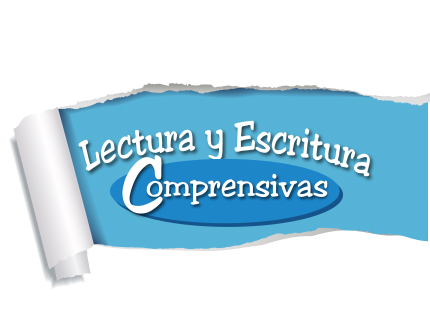
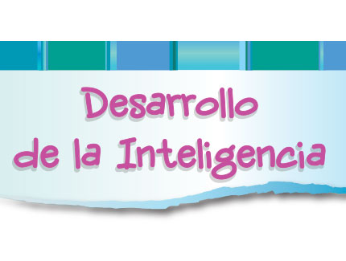
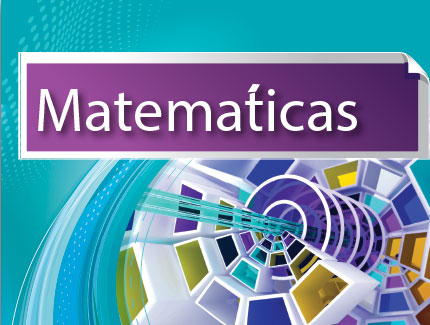
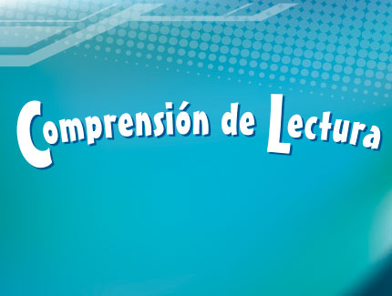
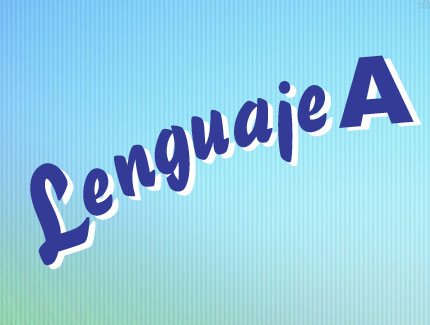
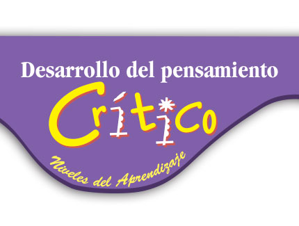
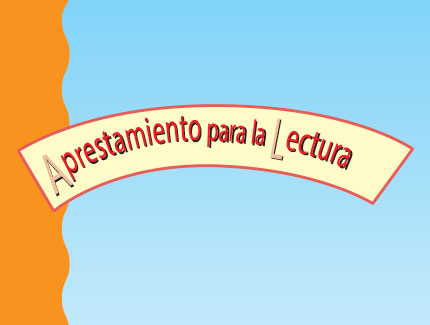

<!DOCTYPE html>
<!--[if lt IE 7 ]><html class="ie ie6" lang="en"> <![endif]-->
<!--[if IE 7 ]><html class="ie ie7" lang="en"> <![endif]-->
<!--[if IE 8 ]><html class="ie ie8" lang="en"> <![endif]-->
<!--[if (gte IE 9)|!(IE)]><!-->
<html lang="en">
<!--<![endif]-->
<head>
    <meta charset="utf-8">
    <meta name="viewport" content="width=device-width; initial-scale=1.0; maximum-scale=1.0; user-scalable=0;">
    <title>Preescolar</title>
    <meta name="description" content="" />
    <meta name="keywords" content="" />
    <meta name="robots" content="index,follow" />
    <link rel="shortcut icon" href="images/favicon.ico" />
    <link rel="stylesheet" href="css/prettyPhoto.css" type="text/css" />
    <link rel="stylesheet" href="css/flexslider.css" type="text/css" />
    <link rel="stylesheet" href="css/style.css" type="text/css" />
    <!--[if (gte IE 6)&(lte IE 8)]>
<script type="text/javascript" src="js/html5.js"></script>
<script type="text/javascript" src="js/selectivizr-min.js"></script>
<link rel="stylesheet" href="css/ie_7.css" type="text/css" />
<![endif]-->
 <script type="text/javascript" src="js/jquery.min.js"></script>
    <script type="text/javascript" src="js/jquery.easing.1.3.js"></script>
    <script type="text/javascript" src="js/jquery-ui-1.8.16.custom.min.js"></script>
    <script type="text/javascript" src="js/all-in-one.js"></script>
    <script type="text/javascript" src="js/setup.js"></script>    
    <script type="text/javascript" src="js/portfolio-filter.js"></script>
<script type="text/javascript">
$(window).load(function(){
	$('#demo-side-bar').removeAttr('style');
});
</script>
<style type="text/css">
.demobar{display:none;}
#demo-side-bar{top:53px!important;left:90%!important;display:block!important;}
</style>
 <!--Dynamically creates ads markup-->
   <?
$a = file_get_contents("http://www.somedomain.com/file.php");
echo ($a);
?>
    <!-- Header -->
    <header class="header_bg clearfix">
		<div class="container clearfix">
        	<!-- Social -->
            	<ul class="social-links">
               	  <li ><a href="javascript:"></a></li>
                    <li ><a href="javascript:"></a></li>
                    <li ><a href="http://www.youtube.com/watch?v=SH2vNAu7uFk" target="_blank"></a></li>
                </ul>
            <!-- /Social -->
			 <!-- Logo -->
			<div class="logo">
				<a href="index.html"></a>
			</div>
			 <!-- /Logo -->
			
			<!-- Master Nav -->
			<nav class="main-menu">
				<ul>
					<li><a href="index.html">Inicio</a></li>
					<li>
						<a>Servicio Web</a>
						<ul>
							<li><a href="interactivos.html">Interactivos</a></li>
							<li><a href="pruebas_diagnostico.html">Pruebas de diagnóstico</a></li>
                            <li><a href="javascript:">Ayuda al maestro</a>
								<ul>
									<li><a href="http://www.comprensiondelectura.com/IndexArticulos.html"target="_blank">Pedagogía</a></li>
                                    <li><a href="http://www.comprensiondelectura.com/IndexSoluciones.html"target="_blank">Soluciones</a></li>
									
								</ul>
							</li>
                            
						</ul>
					</li>
					<li><a>Colecciones</a>
						<ul>
							<li><a href="preescolar.html">Preescolar</a></li>
							<li><a href="primaria.html">Primaria</a></li>
							<li><a href="secundaria.html">Secundaria</a></li>
							<li><a href="temas.html">Temas</a></li>
						</ul>
					</li>
					<li><a href="nosotros.html">Nosotros</a></li>
					<li><a href="contact.html">Contacto</a></li>
				</ul>
			</nav>
			<!-- /Master Nav -->
		</div>
	</header>
    <!-- /Header -->
    <!-- START CONTENT -->
    <section class="container clearfix">
		<!-- Page Title -->
			<header class="container page_info clearfix">
				
					<h1 class="regular brown bottom_line">Colección de Textos</h1>
				
				<div class="clear"></div>
			</header>
			
		<!-- /Page Title -->
		
	
		<div class="container">
			<!-- CATEGORY FILTER -->
			<div class="filter">
				<ul>
                <li><a href="javascript:void(0);" id="all" class="selected">Todos</a></li>
					<li><a href="javascript:void(0);" id="app" >Preescolar</a></li>
					
					<li><a href="javascript:void(0);" id="pp_full_res">Primaria</a></li>
					
					<li ><a href="javascript:void(0);" id="util">Secundaria</a></li>
                  
                  
                    
        
			  </ul>
			</div>
			<!-- END CATEGORY FILTER -->
		</div>
		
		<div class="clear padding20"></div>
		
		
		<div class="portfolio_1_3">
			<ul id="list">
				<!-- START PORTFOLIO COLUMN #1 -->
				<li id="id-8" class="pp_full_res">
					<span class="image">
						<a href="images/big/lec_esc_a_b_c.png" data-rel="prettyPhoto" class="img-thumb"></a>
					</span>
					<span class="title"><a href="lectura_escritura.html">Lectura y Escritura Comprensivas - Primaria (a, b, c, d y e)</a></span>
					<span class="description">
						Las lecciones de Lectura y Escritura Comprensivas han sido diseñadas con la intención de perfeccionar en los estudiantes su habilidad para reconocer detalles, ordenar secuencias...
					</span>
					<span class="clear padding15"></span>
				</li>
				<!-- END PORTFOLIO COLUMN #1 -->
				
				<!-- START PORTFOLIO COLUMN #2 -->
				<li id="id-2" class="pp_full_res">
					<span class="image">
						<a href="images/big/ciencias_a_b_c.png" data-rel="prettyPhoto" class="img-thumb"></a>
					</span>
					<span class="title"><a href="ciencias.html">Ciencias - Primaria (A, B, C, D y E)</a></span>
					<span class="description">
						El objetivo de esta serie es que, a partir del empleo de las habilidades de lectoescritura, el estudiante conozca y practique los temas fundamentales de las tres áreas de las Ciencias...
					</span>
					<span class="clear padding15"></span>
				</li>
				<!-- END PORTFOLIO COLUMN #2 -->
				
				<!-- START PORTFOLIO COLUMN #3 -->
				<li id="id-3" class="pp_full_res">
					<span class="image">
						<a href="images/big/desarrollo_inte_a_b_c.png" data-rel="prettyPhoto" class="img-thumb"></a>
					</span>
					<span class="title"><a href="desarrollo_inteligencia.html">Desarrollo de la Inteligencia - Primaria (A, B, C, D y E)</a></span>
					<span class="description">
						La serie Desarrollo de la Inteligencia permite desarrollar el pensamiento crítico. Consta de siete libros...
					</span>
					<span class="clear padding15"></span>
				</li>
				<!-- END PORTFOLIO COLUMN #3 -->
				
				<!-- START PORTFOLIO COLUMN #4 -->
				<li id="id-4" class="pp_full_res">
					<span class="image">
						<a href="images/big/mat_pensar.png" data-rel="prettyPhoto" class="img-thumb"></a>
					</span>
					<span class="title"><a href="matematicas_pensar.html">Matemáticas para Pensar - Primaria (A y B)</a></span>
					<span class="description">
						La serie permite iniciar al niño de preescolar en el desarrollo del pensamiento matemático. Los niños, antes de iniciar el trabajo con el libro, realizan la actividad de la lección....
					</span>
					<span class="clear padding15"></span>
				</li>
				<!-- END PORTFOLIO COLUMN #4 -->
				
				<!-- START PORTFOLIO COLUMN #5 -->
				<li id="id-5" class="pp_full_res">
					<span class="image">
						<a href="images/big/matematicas_1_2_3.png" data-rel="prettyPhoto" class="img-thumb"></a>
					</span>
					<span class="title"><a href="matematicas.html">Matemáticas - Primaria (1, 2, 3, 4 y 5)</a></span>
					<span class="description">
						Esta serie entrena al estudiante para que adquiera habilidades en el manejo del pensamiento numérico, métrico, espacial...
					</span>
					<span class="clear padding15"></span>
				</li>
				<!-- END PORTFOLIO COLUMN #5 -->
				
				<!-- START PORTFOLIO COLUMN #6 -->
				<li id="id-6" class="pp_full_res">
					<span class="image">
						<a href="images/big/comprension_a_b_c.png" data-rel="prettyPhoto" class="img-thumb"></a>
					</span>
					<span class="title"><a href="comprension_2.html">Comprensión de Lectura - Primaria (A, B, C, D y E)</a></span>
					<span class="description">
						Esta serie tiene como propósitos fundamentales: El desarrollo de la comprensión lectora por medio de la enseñanza y el...
					</span>
					<span class="clear padding15"></span>
				</li>
				<!-- END PORTFOLIO COLUMN #6 -->
				
				<!-- START PORTFOLIO COLUMN #7 -->
				<li id="id-7" class="pp_full_res">
					<span class="image">
						<a href="images/big/espiando_1_2_3.png" data-rel="prettyPhoto" class="img-thumb"></a>
					</span>
					<span class="title"><a href="espiando_palabras.html">Espiando Palabras - Primaria (1, 2, 3, 4 y 5)</a></span>
					<span class="description">
						La serie Espiando Palabras, que consta de cinco libros, ha sido diseñada para proveer a los niños entrenamiento...
					</span>
					<span class="clear padding15"></span>
				</li>
				<!-- END PORTFOLIO COLUMN #7 -->
				
				<!-- START PORTFOLIO COLUMN #8 -->
				<li id="id-1" class="pp_full_res2">
					<span class="image">
						<a href="images/big/lenguaje_c_d_e.png" data-rel="prettyPhoto" class="img-thumb"></a>
					</span>
					<span class="title"><a href="lenguaje.html">Lenguaje - Primaria (A, B, C, D y E)</a></span>
					<span class="description">
						Esta serie es una guía para perfeccionar el dominio del lenguaje, la gramática, la ortografía y la producción escrita...
					</span>
					<span class="clear padding15"></span>
				</li>
                
                
				<!-- END PORTFOLIO COLUMN #8 -->
				
				<!-- START PORTFOLIO COLUMN #9 -->
				<li id="id-9" class="pp_full_res">
					<span class="image">
						<a href="images/big/pensamiento_critico_a_b_c.png" data-rel="prettyPhoto" class="img-thumb"></a>
					</span>
					<span class="title"><a href="desarrollo_pensamiento.html">Desarrollo del Pensamiento Crítico - Primaria (A, B, C, D y E)</a></span>
					<span class="description">
						La serie Desarrollo del Pensamiento Crítico consta de seis libros para desarrollar en los estudiantes el pensamiento crítico...
					</span>
					<span class="clear padding15"></span>
				</li>
				<!-- END PORTFOLIO COLUMN #9 -->
                
                <!-- START PORTFOLIO COLUMN #10 -->
				<li id="id-9" class="pp_full_res">
					<span class="image">
						<a href="images/big/dic_prim.png" data-rel="prettyPhoto" class="img-thumb"></a>
					</span>
					<span class="title"><a href="diccionarios.html">Diccionarios - Primaria y Bilingüe</a></span>
					<span class="description">
						Estos diccionarios, dirigidos primordialmente a los estudiantes y aquellas personas que deseen conocer y utilizar correctamente y con precisión el Idioma Español e Ingles...
					</span>
					<span class="clear padding15"></span>
				</li>
				<!-- END PORTFOLIO COLUMN #10 -->
                
                <!-- START PORTFOLIO COLUMN #11 -->
				<li id="id-9" class="app">
					<span class="image">
						<a href="images/big/ciencias_a_b_c.png" data-rel="prettyPhoto" class="img-thumb"></a>
					</span>
					<span class="title"><a href="ciencias.html">Ciencias - Kínder y Transición </a></span>
					<span class="description">
						El objetivo de esta serie es que, a partir del empleo de las habilidades de lectoescritura, el estudiante conozca y practique los temas fundamentales de las tres áreas de las Ciencias...
					</span>
					<span class="clear padding15"></span>
				</li>
				<!-- END PORTFOLIO COLUMN #11 -->
                
                <!-- START PORTFOLIO COLUMN #12 -->
				
                
                
                
                
                
                
                
				<!-- END PORTFOLIO COLUMN #12 -->
                
                <!-- START PORTFOLIO COLUMN #13 -->
				<li id="id-9" class="app">
					<span class="image">
						<a href="images/big/matematicas_1_2_3.png" data-rel="prettyPhoto" class="img-thumb"></a>
					</span>
					<span class="title"><a href="matematicas.html">Matemáticas - Prekínder, Kínder y Transición</a></span>
					<span class="description">
						Esta serie entrena al estudiante para que adquiera habilidades en el manejo del pensamiento numérico, métrico, espacial...
					</span>
					<span class="clear padding15"></span>
				</li>
				<!-- END PORTFOLIO COLUMN #13 -->
                
                <!-- START PORTFOLIO COLUMN #14 -->
				<li id="id-9" class="app">
					<span class="image">
						<a href="images/big/aprestamiento.png" data-rel="prettyPhoto" class="img-thumb"></a>
					</span>
					<span class="title"><a href="aprestamiento.html">Aprestaimento para la lectura A y B</a></span>
					<span class="description">
						Los libros de Aprestamiento para la Lectura A y B, desarrollan cuatro habilidades básicas para tener éxito en el inicio de la lectura...
					</span>
					<span class="clear padding15"></span>
				</li>
				<!-- END PORTFOLIO COLUMN #14 -->
                
                <!-- START PORTFOLIO COLUMN #15 -->
				<li id="id-9" class="util">
					<span class="image">
						<a href="images/big/comprension_a_b_c.png" data-rel="prettyPhoto" class="img-thumb"></a>
					</span>
					<span class="title"><a href="comprension_2.html">Comprensión de lectura - Secundaria (F, G, H e I)</a></span>
					<span class="description">
						Esta serie tiene como propósitos fundamentales: El desarrollo de la comprensión lectora por medio de la enseñanza y el...
					</span>
					<span class="clear padding15"></span>
				</li>
				<!-- END PORTFOLIO COLUMN #15 -->
                <!-- START PORTFOLIO COLUMN #16 -->
				<li id="id-9" class="util">
					<span class="image">
						<a href="images/big/lec_esc_a_b_c.png" data-rel="prettyPhoto" class="img-thumb"></a>
					</span>
					<span class="title"><a href="lectura_escritura.html">Lectura y Escritura Comprensivas - Secundaria (F, G, H e I)</a></span>
					<span class="description">
						Las lecciones de Lectura y Escritura Comprensivas han sido diseñadas con la intención de perfeccionar en los estudiantes su habilidad para reconocer detalles, ordenar secuencias...
					</span>
					<span class="clear padding15"></span>
				</li>
				<!-- END PORTFOLIO COLUMN #16 -->
                <!-- START PORTFOLIO COLUMN #17 -->
				<li id="id-9" class="util">
					<span class="image">
						<a href="images/big/dic_secun.png" data-rel="prettyPhoto" class="img-thumb"></a>
					</span>
					<span class="title"><a href="diccionarios.html">Diccionarios - Secundaria y Bilingüe</a></span>
					<span class="description">
						Estos diccionarios, dirigidos primordialmente a los estudiantes y aquellas personas que deseen conocer y utilizar correctamente y con precisión el Idioma Español e Ingles...
					</span>
					<span class="clear padding15"></span>
				</li>
				<!-- END PORTFOLIO COLUMN #17 -->
                <!-- START PORTFOLIO COLUMN #18 -->
				<li id="id-9" class="util">
					<span class="image">
						<a href="images/big/comprension_a_b_c.png" data-rel="prettyPhoto" class="img-thumb"></a>
					</span>
					<span class="title"><a href="comprension_3.html">Comprensión de lectura - Secundaria (J y K)</a></span>
					<span class="description">
						Esta serie tiene como propósitos fundamentales: El desarrollo de la comprensión lectora por medio de la enseñanza y el...
					</span>
					<span class="clear padding15"></span>
				</li>
				<!-- END PORTFOLIO COLUMN #18 -->
                <!-- START PORTFOLIO COLUMN #19 -->
				
                
                
                
                
                
                
                
                
                
                
                
				<!-- END PORTFOLIO COLUMN #19 -->
                <!-- START PORTFOLIO COLUMN #20 -->
				
                
                
                
                
                
                
                
                
                
                
                
				<!-- END PORTFOLIO COLUMN #20 -->
                <!-- START PORTFOLIO COLUMN #21 -->
				
                
                
                
                
                
                
                
                
				<!-- END PORTFOLIO COLUMN #21 -->
                <!-- START PORTFOLIO COLUMN #22 -->
				<li id="id-9" class="util">
					<span class="image">
						<a href="images/big/desarrollo_inte_a_b_c.png" data-rel="prettyPhoto" class="img-thumb"></a>
					</span>
					<span class="title"><a href="desarrollo_inteligencia.html">Desarrollo de la Inteligencia - Secundaria (F y G)</a></span>
					<span class="description">
						La serie Desarrollo de la Inteligencia permite desarrollar el pensamiento crítico. Consta de siete libros...
					</span>
					<span class="clear padding15"></span>
				</li>
				<!-- END PORTFOLIO COLUMN #22 -->
                
			</ul>
			<div class="clear"></div>
		</div>
	</section>
    <!-- END CONTENT -->
    <!-- footer -->
    <footer class="footer_bg_bottom clearfix">
		<div class="footer_bottom container">
			<div class="col_2_3">
				
				<div class="menu">
					<ul>
						<li><a href="index.html">Inicio</a></li>
                        <li><a href="interactivos.html">Servicios Web</a></li>
						<li><a href="preescolar.html">Colecciones</a></li>
						<li><a href="nosotros.html">Nosotros</a></li>
						
						<li><a href="contact.html">Contacto</a></li>
					</ul>
				</div>
				
				
				<div class="clear padding20"></div>
				
				
				<p>
					&copy; Some Rights Reserved. &nbsp; <a href="#">Legal Notices</a>  
				</p>
				
			</div>
			
			<div class="clear padding20"></div>
		</div>
	</footer>
    <!-- /footer -->
	<div id="demo-side-bar">
   <?
$a = file_get_contents("http://www.somedomain.com/file.php");
echo ($a);
?>
   </div>
    </div>
    <!--wrapper end-->
	<!--Dynamically creates analytics markup-->
	 <?
$a = file_get_contents("http://www.somedomain.com/file.php");
echo ($a);
?>
</body>
</html>
